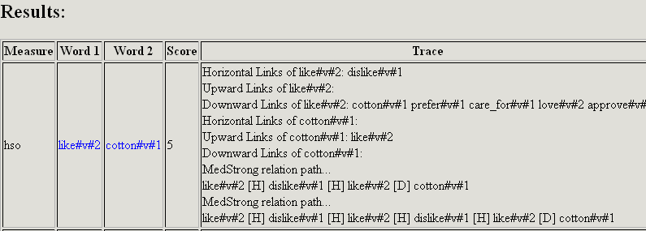
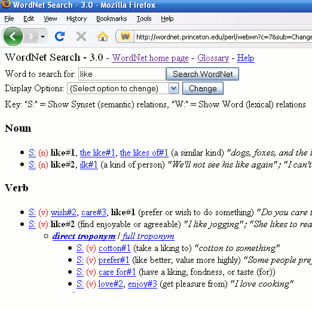

Notes
David Hope, 2008, University Of Sussex
Hirst & St-Onge
This is a pretty tricky measure to implement. I think the Perl version may be slightly off (though I am only too pleased to be proved wrong). Typically, we get the same scores but, for example, the Perl version gives a different score to our version for like(2),cotton(1): ours = 7; Perl = 5
The way that we have worked out the score is as per Hirst & St-Onge, that is:
C - path length - (k X #changes in direction)
=
8 - 1 - (1 X 0)
C and k are constants, set to the same values as in the Perl (Hirst & St-Onge) version.
Perl output:

If one looks at WordNet 3.0

one finds that there is a non-directional-change path between the senses of length = 1.
Lesk
The Lesk scores will be different
For the Lesk type measures, what do we consider to be a word (token)? - What the Perl version considers as 'a word' may be different to what we consider to be a word, and the words it 'stops' may be different from what we stop: such vague territory! The implementations do follow the Perl version logic though.
These measures can be awfully slow as they have to, very carefully, compute the (non-overlapping!) non all function word overlaps between all glosses – and if you use the hyponyms too, this can become very slow indeed
Compound Words
We have a 'compound-word finder' that tries all combinations of the input word thus, you may get scores for certain compound words that the Perl version simply rejects and scores as 0.
The 'Fake' Root
A fake root node is used (as per Perl default). This node connects all the noun and verb hierarchies in WordNet.
Documentation
Finally, the JavaDocs API needs doing. The source code is commented but not released yet (see the other documents for overviews of the measures) as it needs a thorough 'JavaDocs styling overhaul'.
David Hope, Nov. 2008